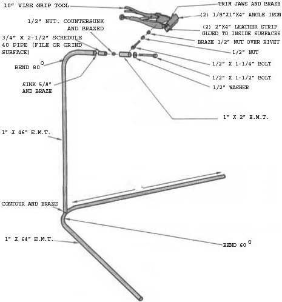

Mother's Bike Service Stand
With an old pair of Vise grips, about $8 in parts and an hour's time, you can ease your bicycle maintenance chores, including diagram and instructions.
May/June 1982
With an old pair of Vise Grips, about $8.00 in parts, and an hour's time, you can ease your bicycle maintenance chores.
STAFF PHOTO
When most tools break, they're merely assigned to the scrapheap. But when a pair of Vise Grips wears out (which usually means that the teeth have simply become blunted over the years), it'll often still have some life left in it... especially if its owner has a fertile imagination.
The project featured here-designed for THE Mother Earth News(restricted) by Iowan Gene Smyers-is a perfect example of such recycling: With the help of about 10 feet of 1" electrical metallic tubing (E.M.T.), a couple of scraps of 1" angle, a hunk of 3/4" pipe, and a few 1/2" bolts and nuts, Gene transformed a "biteless" Vise Grip tool-in less than an hour-into a simple service stand that comes in handy when tackling just about any kind of bicycle maintenance or repair.
The only tools required to complete the job are a cutting torch (as an alternative, the Bernz-O-Matic Oxygen Tote Torch outfit, No. OX-2500, that's sold at many hardware and discount stores will serve about as well), a manual pipe-bending tool (of course, heat can be used to fashion a crude, but serviceable, arc in the E.M.T.), a hacksaw, and a file or grinding wheel.
Start by shaping and assembling the conduit frame. We've found that a 64" length of E.M.T., bent at a 60° angle in the center to create two 24" legs, works well for a base . . . and that a 46" piece, curved to 80° at one end, will provide a suitable upright. Before brazing the vertical arm to the leg tube, though, do shape the end of the pole-using your saw and file-so it matches the contour of the base tubing (you won't be able to produce a secure joint without first performing this step).
The upright can be either positioned vertically or canted inward, 5° or so, to provide for additional clearance. And if you plan to work on bikes in the 40-pound (and up) range, you might consider fastening a pair of 12" struts between the stanchion and the tubular base for extra support.
To adapt the Vise Grips for cycle-biting duty, first cut two 4" lengths of 1/8" X 1" X 1" angle iron, then trim away the ends of the tool's "mandibles"-as shown-so the pair of angles will fit flush against the closed jaws when the adjusting nut is drawn in. Make sure the angles form a square with each other and that the pliers are centered on, and perpendicular to, the irons. Then braze each one securely to its respective mount.
The clamp mechanism is unique not only because it incorporates Vise Grips, but also because it features an all-position swivel. To give the stand this capability, just file or grind a section of 3/4" X 2-1/2" pipe until it slips easily into the open end of the upright stanchion, and braze a 1/2" nut inside this hollow plug in such a way that its outer face is flush with one end of the pipe (you may have to file the nut's corners slightly if it's to fit properly). Then sink the plug's opposite end 5/8 inch into the curved E.M.T. support and braze it in place.
Next, cut a 2" length of conduit from your scrap, and braze a 1/2" X 1-1/4" bolt to its side, off center . . . then fasten a 1/2" nut to the upper jaw of the Vise Grips, right over the rivet, in the same manner. By spinning a third 1/2" nut onto the exposed bolt and threading the clamp assembly onto the end of that stud, you can use the free nut to lock the grip in any position. Then, to complete the swivel, just slip the clamp's collar over its pipe plug (with the flank bolt closest to the end) and run a 1/2" X 1-1/2" bolt, with a washer, into that stem's countersunk nut to serve as a lock.
Wrap the project up by giving the stand a coat or two of your favorite paint and gluing some 2" X 4" leather pads to the inside surfaces of the new angle jaws to prevent damage to the bike's finish. (You might also want to slip some rubber caps over the legs' sharp ends for safety's sake.) Since the modified Vise Grips are still fully adjustable-and likely almost as tenacious as they were when you bought them-you may find that your creation will serve other purposes in addition to grabbing bicycles. In fact, the homemade stand is so useful that you might just want to purchase a new pair of Vise Grips and use your present one in this project... even if it's not worn out yet!
 |
 |
|